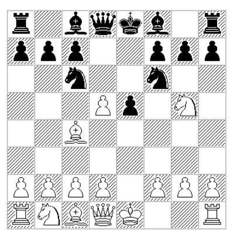

Sample
Created Saturday 13 January 2018
Example of a Specific Opening Preparation - Two Knights Defence for Black
There is no point discussing an opening repertoire without any examples, so to be more concrete here, after the moves 1.e4 e5 2. Nf3 Nc6 3.Bc4, Black can opt for the Two Knights Defence in which case our high level tree will look like this:
Then drilling into the 4.Ng5 variation for White, I'd like to suggest the Uhlvestad variation and we'll now cover it in more details, by breaking down White's possible responses into 4 main variations/games in our database of opening theory.
The first three theoretical lines cover White's non-critical responses, and as long as Black plays energetically - should not pose serious problems for him. Once understood and remembered, playing it out at the board should be the matter of showing off the analysis. The last (fourth) variation is more critical and I had to spend some serious time proving out the validity of Black's play, and there is still room here for creative analysis.
C 57 Two Knights Uhlvestad - 6.dc
1. e4 e5 2. Nf3 Nc6 3. Bc4 Nf6 4. Ng5 d5 5. exd5

5. ... b5!?
Introduced by American master Olav Ulvestad in 1940s, this move has great shock value and if unexpected - it gives White plenty of room for going astray. 5... b5 looks rather odd, but has a fair number of ideas behind it, as by counterattacking the bishop Black engages in very concrete play. In most critical variations Black sacrifices a pawn, but plays for faster development and initiative. With proper and concrete preparation he does not risk much, while White has to tread very carefully.
****
( 5. ... Nxd5? 6. Nxf7!? is the famous Fried Liver attack. )
****
( 5. ... Na5 is the traditional main line, where Black tries to get faster development and compensation for the pawn after 6. Bb5+ c6 7. dxc6 bxc6 with 8. Bd3!? being the latest promising try for an advantage from White. Given that the theoretical advantage here is currently on the first player's side, 5...b5 is a logical new direction to explore, with statistics being about the same as in the 8.Bd3 line, but after 5... b5 White is much less likely to know the proper path to advantage - if one exists at all. )
6. dxc6?!
A natural capture, but giving up the light squared bishop leaves the knight on g5 without a purpose and it will soon have to retreat - giving Black more time for gaining advantage in development.
6. ... bxc4
Black controls the center and his bishops already have open diagonals, while White's pieces have a hard time coming out to optimal squares. Black has more than enough compensation for a pawn, especially given that the pawn on c6 is very vulnerable.
7. Qe2
( 7. Nc3 h6 8. Nge4 Nxe4 9. Nxe4 Qd5 10. Qf3 Be6 11. O-O O-O-O 12. Re1 Qxc6 13. b3 f5 14. Nc3 e4 15. Qh5 Bc5 16. bxc4 g6 17. Qe2 Bxc4 18. d3 exd3 19. cxd3 Rxd3 20. Qc2 Ba6 21. Nd1 Bb7 22. Ne3 Rxe3 0-1 (22) Bahram,N-Hector,J, 1998 )
7. ... h6!?
In the spirit of this variation - another white piece is invited to cross into Black's half of the board, only to be forced to retreat later. This move was suggested to me by my coach Iosif Davidovich Berezin in the mid 1990s, and it has held up to the test of time. This move/idea is also consistent with the suggested repertoire of playing h7-h6 in the case of 6.Bf1 as well.
( Perhaps even simpler and very strong is 7. ... Qd5 as it typically happens in this variation, by coming to d5, the black queen is both defending e5, and hitting g2 and and c6 pawns. 8. O-O Bd6 9. Nc3 Qxc6 10. d4 cxd3 =+ )
8. Qxe5+ Be7 9. Nf3
( One of my online 15 minute games against a FIDE master also resulted in a fascinating kingside attack by Black: 9. Ne4 O-O 10. O-O Rb8 ~= ( 10. ... Re8 11. Nbc3 Rb8 12. Re1 Ng4 13. Qd5 Bd6 14. h3 Qh4 15. Rf1 Be6 16. Qa5 Nh2 17. Nxd6 Nxf1 18. Nxe8 Rxe8 19. d3 Bxh3 20. Be3 Bxg2 21. Kxg2 Nxe3+ 22. fxe3 Rxe3 23. Ne4 Qg4+ 24. Kf2 Re2+ 25. Kf1 Qg2# White checkmated 0-1 (25) GiantHulk (2225)-DDT3000 (2150) Internet Chess Club 2016 ) ( 10. ... Ng4!? 11. Qb5 ( 11. Qc3 Qd5 12. Qf3 f5 13. Ng3 Qf7 14. Nc3 f4 15. Nge2 Bd6 16. Nd4 Kh8 17. Qd5 Qg6 18. f3 Nf6 19. Qxc4 Bh3 20. Rf2 Rae8 21. Kf1 Bc8 22. d3 Qh5 23. Nde2 Qxh2 24. Bxf4 Qh1+ 25. Ng1 Bxf4 26. Qxf4 Ng4 27. Qxf8+ Rxf8 28. fxg4 Rxf2+ 29. Kxf2 Qh4+ 30. g3 Qh2+ 31. Ke3 Qxg3+ -+ 0-1 (50) Boehnisch,M-Reich,J Ruhla 1957 ) 11. ... Be6 12. Nbc3 f5 13. Ng3 Bd6 14. Re1 f4 15. Nf1 Qh4 16. Nd1 f3 17. g3 Qh3 18. Nde3 Nxh2 19. Nxh2 Bxg3 0-1 (19) Oldrati,P-Kurylo,R (2423) ICCF email 2002 ) )
9. ... O-O 10. O-O Bg4
Black has three developed pieces against one of White's pieces, but White has to lose more tempi to avoid further damage to his position, while Black still has a lot of potential for activating his pieces, especially the rooks - that are screaming to be put on the open 'e' and 'b' files.
11. Qf4 Bd6 12. Qxc4 Bxf3 13. gxf3 Rb8
Black has enormous compensation for 3 pawns.
14. a3
( 14. c3 Nd5 15. Qg4 f5 16. Qc4 Kh8 ( 16. ... Qg5+! 17. Kh1 Kh7 18. Rg1 Qh5 19. Rg3 Bxg3 20. fxg3 Rfe8 -+ 21. Qf1 f4 22. g4 Qh4 -+ and Re1 wins ) 17. Kh1 Bxh2 18. Kxh2 f4 19. Rh1 Rf5 20. Kg2 Qg5+ 21. Kf1 Re8 22. Qd4 Rfe5! -+ a picturesque position as all White's pieces except for the queen are trapped on the first rank he can only delay checkmate by giving up the queen. 23. Qxe5 Qxe5 24. Na3 Qe2+ 25. Kg2 Re6 26. Rh4 Rg6+ 27. Rg4 Rxg4+ 28. fxg4 Qxg4+ 29. Kf1 f3 30. d4 Qg2+ 31. Ke1 Qg1+ 32. Kd2 Qxf2+ 33. Kd3 Qe2# White checkmated 0-1 ImThinkinArbys5-DDT3000/Internet Chess Club 2012 )
14. ... Rb5!!
An extremely elegant idea from a very old correspondence game.
( Today's computers point out an even simpler win with 14. ... Qc8!? 15. Kg2 Qf5 threatening Qg6 16. Nc3 Qg6+ -+ 17. Kh1 Qh5 18. f4 Ng4 with checkmate. )
15. Qxb5 Nd5 16. Qc4
( 16. Qxd5 Bxh2+ 17. Kxh2 Qxd5 18. Nc3 Qh5+ )
( with the threat 16. ... Qg5+ 17. Kh1 Qf4 18. h3 Qh2# )
( 16. d4! Qh4 17. Re1 Qxh2+ 18. Kf1 Bg3 19. fxg3 Qh1+ 20. Ke2 Re8+ 21. Kd3 Qxe1 22. Qxd5 Qxc1 23. Qd7 Re3+ 24. Kc4 Qxb2 25. Qc8+ Kh7 26. Qf5+ Kg8 27. Qc8+ = )
16. ... Nf4 17. Kh1 Qh4!
Threatening Qh3 and Qg2.
( The original game went on with 17. ... Re8? 18. Rg1? ( 18. d3! ~ with idea of Bxf4 ) 18. ... Qh4 -+ 19. Qf1 Nd3!! 20. Rg3 ( 20. f4 Nxf2+ 21. Kg2 Bc5 0-1, Berger-Zveiberg, correspondence, 1964 ) 20. ... Re1 -+ )
18. Qe4
18. ... f5!
Despite being up a rook and three pawns, White can't avoid forced checkmate.
19. Qc4+ Kh7 20. Rg1 Qh3 21. Qc3 Rf6 -+
With the arrival of the black rook to g6, White will not be able to defend g2.
22. Rg3 Rg6!
The queen sacrifice comes as the final touch in the analysis of this line.
23. Rxh3 Nxh3 24. d3 Rg1#